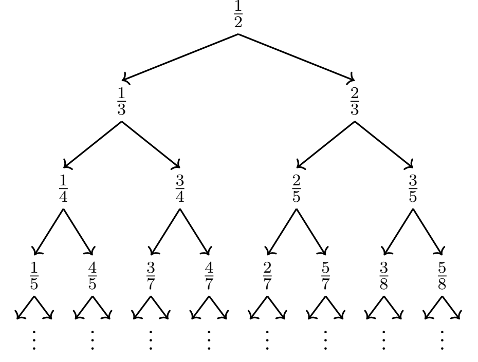

所有节点都满足 $0\lt a\lt b$：左子节点小于 $\frac12$、右子节点大于 $\frac12$，故父节点可唯一反推。沿 $\frac{20}{27}\to\frac{7}{20}\to\frac{7}{13}\to\frac{6}{7}\to\frac{1}{6}\to\frac{1}{5}\to\frac{1}{4}\to\frac{1}{3}\to\frac{1}{2}$ 上行 $8$ 步到根，故 $\frac{20}{27}$ 在第 $8$ 层，答案 (B)。
The tree diagram below has nodes labeled with rational numbers. The top node, at level $0$, is $\frac12$. Each node $\frac{a}{b}$ sprouts two nodes in the level below it, $\frac{a}{a+b}$ and $\frac{b}{a+b}$. For example, level $1$ has nodes $\frac{1}{1+2}=\frac13$ and $\frac{2}{1+2}=\frac23$. At what level does the node $\frac{20}{27}$ appear in the diagram? (A) $5$ (B) $8$ (C) $12$ (D) $26$ (E) The node $\frac{20}{27}$ does not appear in the diagram.
中文翻译：一棵分数二叉树，根（第 $0$ 层）为 $\frac12$。每个节点 $\frac{a}{b}$ 向下一层生出两个子节点 $\frac{a}{a+b}$ 与 $\frac{b}{a+b}$（例如第 $1$ 层为 $\frac13$ 与 $\frac23$）。问节点 $\frac{20}{27}$ 出现在第几层？ (A) $5$ (B) $8$ (C) $12$ (D) $26$ (E) $\frac{20}{27}$ 不出现在图中
📌 答案依据：讲义《2026AMC10A 答案与解析》（用户随附，含答案总表与逐题解析）
讲义给出的正确选项为 (B) $8$，本站解析与之一致。
| 常见错误 | 错在哪 |
|---|---|
答 (D) 26 或 (C) 12 | 顺着向下展开，把分母 $27$ 或分子分母之和 $20+27=47$ 当成层数，或逐层 BFS 展开到第 $8$ 层（共 $256$ 个节点）时手算失控。讲义明确：逆向追踪远比逐层展开简便，根记为第 $0$ 层，上行步数就是层数。 |
答 (A) 5 | 只逆推了前 $5$ 步（$\frac{20}{27}\to\cdots\to\frac{1}{6}$）就以为到根了，或把「$b-a$」操作误当成一次减法直接把 $27-20=7$ 看成层数。逆推必须一直做到 $\frac12$ 为止，中途停下会少数步数。 |
答 (E) 不出现 | 看到分母 $27$ 是奇数、分子分母互素就怀疑不在树上；或误以为树上只有分母为 $2$ 的幂的分数。实际上所有满足 $0\lt a\lt b$ 的既约分数都会出现，$\frac{20}{27}$ 完全合法。 |
根本问题：没有抓住「子节点与 $\frac12$ 的大小关系决定父节点」这一可逆性。只要能唯一反推，层数就是上行步数，与树的规模无关。
与官方解法同源：本站方案一与用户随附讲义《2026AMC10A 答案与解析》第 15 题的书面解答同源（本卷官方站尚未收录，讲义即本次权威答案依据）——所有节点满足 $0\lt a\lt b$，左子节点小于 $\frac12$、右子节点大于 $\frac12$，故 $\frac{u}{v}\lt \frac12$ 时父节点为 $\frac{u}{v-u}$，$\frac{u}{v}>\frac12$ 时父节点为 $\frac{v-u}{u}$；逆推链 $\frac{20}{27}\to\frac{7}{20}\to\frac{7}{13}\to\frac{6}{7}\to\frac{1}{6}\to\frac{1}{5}\to\frac{1}{4}\to\frac{1}{3}\to\frac{1}{2}$ 共 $8$ 步，故在第 $8$ 层。
本站的增量是给出连分数闭式、第 $8$ 层的规模与最大分母，以及「不在树上」的判别。
第 1 步 · 证明父节点唯一。 节点 $\frac{a}{b}$（$0\lt a\lt b$，已约分）的两个子节点为
$$\frac{a}{a+b}\lt \frac12,\qquad \frac{b}{a+b}>\frac12 .$$因为 $a\lt a+b$ 保证左子小于 $\frac12$，而 $2b>a+b\Longleftrightarrow b>a$ 保证右子大于 $\frac12$。所以看到一个节点 $\frac{u}{v}$：
$$\frac{u}{v}\lt \frac12 \Longrightarrow \text{父}=\frac{u}{v-u};\qquad \frac{u}{v}>\frac12 \Longrightarrow \text{父}=\frac{v-u}{u} .$$（$\frac{u}{v}=\frac12$ 只可能是根，因为子节点分母 $a+b$ 严格大于分子，永远不会等于 $\frac12$。）
第 2 步 · 逐步上行。 从 $\frac{20}{27}$ 出发（每一步先与 $\frac12$ 比较）：
$$\frac{20}{27}\xrightarrow{>1/2}\frac{7}{20}\xrightarrow{\lt 1/2}\frac{7}{13}\xrightarrow{>1/2}\frac{6}{7}\xrightarrow{>1/2}\frac{1}{6}\xrightarrow{\lt 1/2}\frac{1}{5}\xrightarrow{\lt 1/2}\frac{1}{4}\xrightarrow{\lt 1/2}\frac{1}{3}\xrightarrow{\lt 1/2}\frac{1}{2}.$$第 3 步 · 数步数。 共 $8$ 次上行到达根 $\frac12$（第 $0$ 层），故 $\frac{20}{27}$ 位于第 $8$ 层。
答案：(B) $8$。
把 $\frac{u}{v}$ 写成 $\frac{v}{u}$ 的连分数。对 $\frac{20}{27}$ 考察 $\frac{27}{20}$：
$$\frac{27}{20}=1+\frac{7}{20}=1+\cfrac{1}{2+\cfrac{1}{1+\cfrac{1}{6}}}=[1,2,1,6].$$一般地，若 $\frac{v}{u}=[q_0,q_1,\ldots,q_s]$，则该节点所在层数为
$$\text{level}=q_0+q_1+\cdots+q_s-2 .$$此处 $1+2+1+6-2=8$，与方法一一致。这个闭式把「逆推」压缩成一次带余除法，且对全部既约 $\frac{a}{b}\ (0\lt a\lt b\lt 30)$ 逐一验算均成立。
验证技巧：① 正向回代：由 $\frac12$ 依次取右、右、左、左、左、左、左、左 可回到 $\frac{20}{27}$，共 $8$ 条边 ✓；② 连分数校验：$\frac{27}{20}=[1,2,1,6]$，部分商之和 $1+2+1+6=10$，层数 $=10-2=8$ ✓；③ 第 $0\sim3$ 层节点数为 $1,2,4,8$，与每层翻倍一致；④ 讲义给出的逆推链与本站逐步核对无一步偏差。
核心知识点：分数树是可逆的——子节点相对 $\frac12$ 的大小唯一决定它是左子还是右子，从而父节点唯一；层数 $=$ 上行到根的步数。
必须掌握的要点：
逐层列出第 $0$ 至第 $3$ 层的全部节点（按分母、分子排序），并说明每层节点数的规律。
从 $\frac12$ 生 $\frac13,\frac23$；$\frac13$ 生 $\frac14,\frac34$，$\frac23$ 生 $\frac25,\frac35$；再下一层由 $\frac14\to\frac15,\frac45$，$\frac34\to\frac37,\frac47$，$\frac25\to\frac27,\frac57$，$\frac35\to\frac38,\frac58$。每层节点数翻倍，因为每个节点恰生两个子节点且不同节点不会生出相同分数（父节点唯一）。
要点：小规模完整列举是逆推规则最好的试金石；把第 $3$ 层的 $8$ 个分数抄一遍，就能确认「左小右大」的判断没有写反。
用同样的逆推法求 $\frac{13}{20}$ 位于第几层，并写出完整逆推链。
$\frac{13}{20}\xrightarrow{>1/2}\frac{7}{13}\xrightarrow{>1/2}\frac{6}{7}\xrightarrow{>1/2}\frac{1}{6}\xrightarrow{\lt 1/2}\frac{1}{5}\xrightarrow{\lt 1/2}\frac{1}{4}\xrightarrow{\lt 1/2}\frac{1}{3}\xrightarrow{\lt 1/2}\frac{1}{2}$，共 $7$ 步。连分数校验：$\frac{20}{13}=[1,1,1,6]$（末项 $6\ge2$），部分商之和 $9$，层数 $9-2=7$ ✓。
要点：换一个目标分数只需重走同一条逆推链；连分数用「末项 $\ge2$」的规范式才与层数对得上。
判断 $\frac{27}{20}$、$\frac{2}{2}$、$\frac{20}{27}$ 三者中哪些会出现在树上，并给出理由。
根为 $\frac12\in(0,1)$，且两个子节点 $\frac{a}{a+b},\frac{b}{a+b}$ 都严格在 $(0,1)$ 内并保持既约，故归纳得所有节点都是 $(0,1)$ 内的既约真分数。$\frac{27}{20}>1$ 超出范围；$\frac{2}{2}=1$ 且不既约（约分后为 $\frac11$，仍不在 $(0,1)$）。$\frac{20}{27}$ 既约且 $0\lt 20\lt 27$，按方法一逆推 $8$ 步到根，确实出现。
要点：先定值域再谈出现；选项 (E) 的干扰正来自「分母是奇数就不是树上分数」的错误直觉。
证明对树上任一既约节点 $\frac{u}{v}$（$0\lt u\lt v$），若 $\frac{v}{u}=[q_0,q_1,\ldots,q_s]$ 取末项 $\ge2$ 的规范式，则层数 $=\sum_{i=0}^{s}q_i-2$；并用原题验证。
逆推一步在 $\frac{v}{u}$ 上对应一次「减去整数部分再取倒数」的欧几里得操作，每做一次带余除法就把某个部分商 $q_i$ 减 $1$；从 $\frac{v}{u}$ 归约到 $\frac{2}{1}$（对应根 $\frac12$）恰好需要 $\sum q_i-2$ 步。原题 $\frac{27}{20}=[1,2,1,6]$（末项 $6\ge2$），$1+2+1+6-2=8$ ✓。对全部既约 $0\lt a\lt b\lt 30$ 的分数逐一比对逆推层数，公式全部成立。
要点：「逆推步数」与「连分数部分商之和」是同一件事的两种语言；规范式（末项 $\ge2$）是公式成立的前提。
第 $8$ 层共有多少个节点？其中最大分母与最小分母各是多少？说明最大分母与斐波那契数的关系。
每层翻倍，第 $L$ 层有 $2^L$ 个节点，故第 $8$ 层 $2^8=256$ 个。穷举这 $256$ 个既约分数：最小分母落在「一直取左子」的链 $\frac12\to\frac13\to\cdots\to\frac1{10}$，即 $\frac{1}{10}$，分母 $10$；最大分母落在连续取右子再取一次左子的斐波那契型链上，节点为 $\frac{34}{89}$，分母 $89=F_{11}$（$F_1=F_2=1$）。一般地第 $L$ 层最大分母为 $F_{L+3}$，本题 $L=8$ 即 $F_{11}=89$ ✓。
要点：层数一确定，规模就由 $2^L$ 锁定；分母极值分别落在「全左」与「近全右」两条极端路径上，是这类树结构问题的通用套路。
口诀：「左小右大定父子，逆向一路走回根；步数就是所在层，连分数和减二验」。